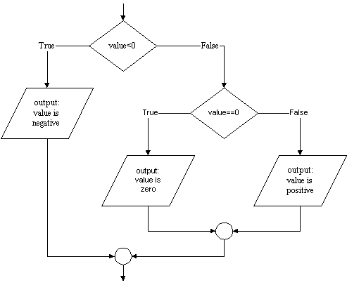

The mathematically inclined will examine the previous program and note that it
mishandles the value 0. Which output statement will be executed if zero is
entered? Well, the test value < 0 will be False because 0 is
not less than 0, so the first output statement will be skipped, and the second
one will be executed displaying the message
0 is positiveon-screen. Unfortunately this is not true: 0 is neither positive nor negative. This means our program must actually deal with three possibilities:
We can accomodate this third possibility by modifying our flowchart as follows.

As the flowchart shows we will require a second selection statement. As
before the first statement will determine if the number is negative. If it is,
the appropriate print statement will be executed. If the number is not negative
however, execution will pass to a second if statement that will determine if the
value is zero, and then select which of two further output statements to execute. The
corresponding Python code looks like this:
value = input( "Enter an integer (e.g. 23 or -118): " )
if value < 0:
print value, "is negative"
else:
if value == 0:
print value, "is neither positive nor negative"
else:
print value, "is positive"(Note the double equal signs, ==. More on this below. )
This is a correct Python program, but the situation of a multiway (as opposed to two-way) decision is so common that Python provides a special syntax to express it:
value = input( "Enter an integer (e.g, 23 or -118): " )
if value < 0:
print value, "is negative"
elif value == 0:
print value, "is neither positive nor negative"
else:
print value, "is positive"Note the use of elif which combines else and if into a single command.